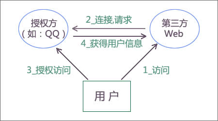

- Introduction
- 1. skill
- 2. Node.js入门
- 3. 异步流程控制
- 4. Express和微信开发入门
-
5.
Mongodb数据库
- 5.1. mongodb安装
- 5.2. 了解mvc里m的作用，以及什么样的代码该放到模型里
- 5.3. mongoose入门
- 5.4. 扩展mongoose模型statics方法和methods的区别
- 5.5. 虚拟属性
- 5.6. 回调：pre和post的差别
- 5.7. mongoose的插件机制
- 5.8. mongoose+promise
- 5.9. mongoosedao
- 5.10. 分页
- 5.11. 关系（1对1，1对多）在mongoose里如何实现
- 5.12. AGGREGATION 关联
- 5.13. 了解索引
- 5.14. 了解优化
- 5.15. mongooseconnection
- 5.16. 了解mongodb的部署与部署
- 5.17. UserModel
- 6. 微信实例和H5实践
- 7. WeUI实战
- 8. 微信支付
- 9. 项目实战《付费课程系统MVP》
- 10. 高级篇（赠送）
- 11. 答疑问题收集
- Published with GitBook
OAuth
什么是OAuth?
OAuth（开放授权）是一个开放标准，允许用户让第三方应用访问该用户在某一网站上存储的私密的资源（如照片，视频，联系人列表），而无需将用户名和密码提供给第三方应用。
目前主流是2.0
OAuth 2.0是OAuth协议的下一版本，但不向后兼容OAuth 1.0。
OAuth 2.0关注客户端开发者的简易性，同时为Web应用，桌面应用和手机，和起居室设备提供专门的认证流程。2012年10月，OAuth 2.0协议正式发布为RFC 6749[1] 。
主要是api
- 微博api
- github
- qq、微信
原理

http://www.ruanyifeng.com/blog/2014/05/oauth_2_0.html


server
-（A）用户打开客户端以后，客户端要求用户给予授权。 -（B）用户同意给予客户端授权。 -（C）客户端使用上一步获得的授权，向认证服务器申请令牌。 -（D）认证服务器对客户端进行认证以后，确认无误，同意发放令牌。 -（E）客户端使用令牌，向资源服务器申请获取资源。 -（F）资源服务器确认令牌无误，同意向客户端开放资源。
OAuth in nodejs
实现
微信OAuth说明
如果用户在微信客户端中访问第三方网页，公众号可以通过微信网页授权机制，来获取用户基本信息，进而实现业务逻辑。
关于网页授权回调域名的说明
1、在微信公众号请求用户网页授权之前，开发者需要先到公众平台官网中的开发者中心页配置授权回调域名。请注意，这里填写的是域名（是一个字符串），而不是URL，因此请勿加http://等协议头； 2、授权回调域名配置规范为全域名，比如需要网页授权的域名为：www.qq.com，配置以后此域名下面的页面http://www.qq.com/music.html 、 http://www.qq.com/login.html 都可以进行OAuth2.0鉴权。但http://pay.qq.com 、 http://music.qq.com 、 http://qq.com无法进行OAuth2.0鉴权 3、如果公众号登录授权给了第三方开发者来进行管理，则不必做任何设置，由第三方代替公众号实现网页授权即可
关于网页授权的两种scope的区别说明
1、以snsapi_base为scope发起的网页授权，是用来获取进入页面的用户的openid的，并且是静默授权并自动跳转到回调页的。用户感知的就是直接进入了回调页（往往是业务页面） 2、以snsapi_userinfo为scope发起的网页授权，是用来获取用户的基本信息的。但这种授权需要用户手动同意，并且由于用户同意过，所以无须关注，就可在授权后获取该用户的基本信息。 3、用户管理类接口中的“获取用户基本信息接口”，是在用户和公众号产生消息交互或关注后事件推送后，才能根据用户OpenID来获取用户基本信息。这个接口，包括其他微信接口，都是需要该用户（即openid）关注了公众号后，才能调用成功的。
关于网页授权access_token和普通access_token的区别
1、微信网页授权是通过OAuth2.0机制实现的，在用户授权给公众号后，公众号可以获取到一个网页授权特有的接口调用凭证（网页授权access_token），通过网页授权access_token可以进行授权后接口调用，如获取用户基本信息； 2、其他微信接口，需要通过基础支持中的“获取access_token”接口来获取到的普通access_token调用。
关于UnionID机制
1、请注意，网页授权获取用户基本信息也遵循UnionID机制。即如果开发者有在多个公众号，或在公众号、移动应用之间统一用户帐号的需求，需要前往微信开放平台（open.weixin.qq.com）绑定公众号后，才可利用UnionID机制来满足上述需求。 2、UnionID机制的作用说明：如果开发者拥有多个移动应用、网站应用和公众帐号，可通过获取用户基本信息中的unionid来区分用户的唯一性，因为同一用户，对同一个微信开放平台下的不同应用（移动应用、网站应用和公众帐号），unionid是相同的。
关于特殊场景下的静默授权
1、上面已经提到，对于以snsapi_base为scope的网页授权，就静默授权的，用户无感知； 2、对于已关注公众号的用户，如果用户从公众号的会话或者自定义菜单进入本公众号的网页授权页，即使是scope为snsapi_userinfo，也是静默授权，用户无感知。
具体而言，网页授权流程分为四步：
1、引导用户进入授权页面同意授权，获取code 2、通过code换取网页授权access_token（与基础支持中的access_token不同） 3、如果需要，开发者可以刷新网页授权access_token，避免过期 4、通过网页授权access_token和openid获取用户基本信息（支持UnionID机制）
install
https://github.com/node-webot/wechat-oauth
npm install wechat-oauth
创建routes/oauth.js
var express = require('express');
var router = express.Router();
var OAuth = require('wechat-oauth');
var client = new OAuth('wx1627638f56ff80a5', 'd9df5debf4e37def18cc5e37326b604e');
/* GET users listing. */
router.get('/', function (req, res, next) {
var domain = "https://topfio-3001-rsqevg.box.myide.io"
var auth_callback_url = domain + "/oauth/callback"
var url = client.getAuthorizeURL(auth_callback_url, '', 'snsapi_userinfo');
console.log(url);
// 重定向请求到微信服务器
res.redirect(url);
});
router.get('/callback', function (req, res, next) {
var code = req.query.code;
client.getAccessToken(code, function (err, result) {
console.log(result)
var accessToken = result.data.access_token;
var openid = result.data.openid;
client.getUser(openid, function (err, result) {
var userInfo = result;
// save or other opration
res.json(userInfo)
});
});
});
module.exports = router;
callback之后
。。。
https://cnodejs.org/topic/555fec114eb040084cfe5d15
之前的版本
这是朴灵写的一个模块
https://github.com/node-webot/wechat-oauth
授权流程
网页授权流程分为四步：
- 1、引导用户进入授权页面同意授权，获取code
- 2、通过code换取网页授权access_token（与基础支持中的access_token不同）
- 3、如果需要，开发者可以刷新网页授权access_token，避免过期
- 4、通过网页授权access_token和openid获取用户基本信息（支持UnionID机制）
简单点
- 1、根据app_id和app_secret和授权后回调url
- 2、在回调里处理业务逻辑，比如获取用户信息，保存或更新
准备工作
var OAuth = require('wechat-oauth');
var client = new OAuth('your appid', 'your secret');
但是有一个问题，比如多台机器集群或多进程时，token需要全局维护，以下为保存token的接口。
if (req.wx) {
req.wx_client = new OAuth(req.wx.app_id, req.wx.app_secret, function (openid, callback) {
// 传入一个根据openid获取对应的全局token的方法
// 在getUser时会通过该方法来获取token
fs.readFile(openid +':access_token.txt', 'utf8', function (err, txt) {
if (err) {return callback(err);}
callback(null, JSON.parse(txt));
});
}, function (openid, token, callback) {
// 请将token存储到全局，跨进程、跨机器级别的全局，比如写到数据库、redis等
// 这样才能在cluster模式及多机情况下使用，以下为写入到文件的示例
// 持久化时请注意，每个openid都对应一个唯一的token!
fs.writeFile(openid + ':access_token.txt', JSON.stringify(token), callback);
});
}
OAuth认证
简单点说就是根据app_id和app_secret和授权后回调url，去微信的网关去认证
认证成功后就会跳到回调url
// 主页,主要是负责OAuth认证
router.get('/oauth', c, wx_config, wx_option, function(req, res) {
console.log('req.query');
var qs = require('qs')
var query_json = qs.stringify(req.query);
console.log(query_json);
var auth_url = req.wx.domain + req.wx.callback.url + "/" + query_json
console.log('auth_url = ' + auth_url);
var url = req.wx_client.getAuthorizeURL(auth_url, '', 'snsapi_userinfo');
// 重定向请求到微信服务器
res.redirect(url);
});
核心方法就是getAuthorizeURL方法
参数
- 'redirectUrl'
- 'state'
- 'scope'
获取用户信息getUser(openid)
获取用户信息getUserByCode
weixin.js
这样说太抽象，还是看代码吧
var express = require('express');
var router = express.Router();
var check_session = require('../middleware/check_session_is_expired');
var OAuth = require('wechat-oauth');
var signature = require('wx_jsapi_sign');
// 读取配置项
var config = require('config');
var app_id = config.get('wx.app_id');
var app_secret = config.get('wx.app_secret');
var domain = config.get('domain');
// 微信授权和回调
var client = new OAuth(app_id, app_secret);
// 主页,主要是负责OAuth认真
router.get('/', function(req, res) {
var url = client.getAuthorizeURL('http://' + domain + '/weixin/callback','','snsapi_userinfo');
// 重定向请求到微信服务器
res.redirect(url);
})
/**
* 认证授权后回调函数
*
* 根据openid判断是否用户已经存在
* - 如果是新用户，注册并绑定，然后跳转到手机号验证界面
* - 如果是老用户，跳转到主页
*/
router.get('/callback', function(req, res) {
console.log('----weixin callback -----')
var code = req.query.code;
var User = req.model.UserModel;
client.getAccessToken(code, function (err, result) {
console.dir(err);
console.dir(result);
var accessToken = result.data.access_token;
var openid = result.data.openid;
var unionid = result.data.unionid;
console.log('token=' + accessToken);
console.log('openid=' + openid);
console.log('unionid=' + unionid);
User.find_by_unionid(unionid, function(err, user){
console.log('微信回调后，User.find_by_unionid(unionid) 返回的user = ' + user)
if(err || user == null){
console.log('经过unionid查询无结果');
client.getUser(openid, function (err, get_by_openid) {
console.log(get_by_openid);
var oauth_user = get_by_openid;
var _user = new User(oauth_user);
_user.username = oauth_user.nickname;
_user.save(function(err, user_save) {
if (err) {
console.log('User save error ....' + err);
} else {
console.log('User save sucess ....' + err);
req.session.current_user = void 0;
res.redirect('/users/' + user_save._id + '/verify');
}
});
});
}else{
console.log('根据unionid查询，用户已经存在')
// if phone_number exist,go home page
if(user.is_valid == true){
req.session.current_user = user;
res.redirect('/mobile/')
}else{
//if phone_number exist,go to user detail page to fill it
req.session.current_user = void 0;
res.redirect('/users/' + user._id + '/verify');
}
}
});
});
});
router.post('/getsignature', function(req, res) {
var url = req.body.url;
var re = /\/$/;
if(!re.test(url)) {
url = url + '/'
}
console.log('\033[32m'+url+'\033[39m');
var config = {
cache_json_file: req.server_path,
appId: app_id,
appSecret: app_secret,
appToken: 'mengxiaoban.com'
};
signature.getSignature(config)(url, function(error, result) {
console.log(result);
if (error) {
res.json({
'error': error
});
} else {
res.json(result);
}
});
});
module.exports = router;
在关注者与公众号产生消息交互后，公众号可获得关注者的OpenID（加密后的微信号，每个用户对每个公众号的OpenID是唯一的。对于不同公众号，同一用户的openid不同）。 摘自《微信公众平台开发者文档》
流程
- 1）var client = new OAuth(app_id, app_secret);
- 2）如果授权成功，就会跳到callback url地址，即认证授权后回调函数
- 3）获取code，即var code = req.query.code;
- 4）获取微信用户信息，client.getAccessToken(code,cb)
- 5）根据微信用户信息里的openid或unionid查询当前数据库里是否有该用户，即
User.find_by_unionid(unionid, function(err, user)
- 6）如果有，登录成功，创建session，重定向主页面
req.session.current_user = user;
res.redirect('/mobile/')
- 7）如果没有，需要创建用户,根据openid获取用户信息
client.getUser(openid, function (err, get_by_openid)
- 8）保存用户
var _user = new User(oauth_user);
_user.username = oauth_user.nickname;
_user.save(function(err, user_save)
9）如果保存用户成功，跳转到6）
10）保存失败，显示错误页面即可
user.js model
var LOCK_TIME, MAX_LOGIN_ATTEMPTS, SALT_WORK_FACTOR, Schema, UserSchema, bcrypt, mongoose;
var mongoose = require('mongoose');
var Schema = mongoose.Schema;
var Promise = require('bluebird');
var autoIncrement = require('mongoose-auto-increment');
autoIncrement.initialize(mongoose.connection);
Schema = mongoose.Schema;
SALT_WORK_FACTOR = 10;
MAX_LOGIN_ATTEMPTS = 5;
LOCK_TIME = 2 * 60 * 60 * 1000;
UserSchema = new Schema({
username: {// 真实姓名
type: String
},
unionid : String,
openid: {// from weixin openid
type: String,
required: true,
index: {
unique: true
}
},
nickname : String,// from weixin 昵称
sex : String,// from weixin 性别 0->女 1->男
language : String,// from weixin 语言
city : String,// from weixin 城市
province : String,// from weixin
country : String,// from weixin
headimgurl : String,// from weixin 头像路径
privilege : [], // from weixin
created_at : {
type: Date,
"default": Date.now
}
});
UserSchema.virtual('is_valid').get(function(){
console.log('phone_number = ' +this.phone_number)
if(this.phone_number == undefined | this.invite_code == undefined){
return false;
}
return this.invite_code.length >= 2 && this.phone_number > 0
});
// 检查是否填写过邀请信息
UserSchema.virtual('is_invited').get(function(){
if(typeof this.weixin_name == 'undefined'){
return false;
}
});
UserSchema.methods.is_exist = function(cb) {
var query;
query = {
username: this.username,
password: this.password
};
return this.model('UserModel').findOne(query, cb);
};
UserSchema.statics.findAll = function(cb) {
return this.find().sort({ created_at: 'asc'}).exec(cb);
};
UserSchema.methods.save_necessary = function(cb) {
var update = {
invite_code: this.invite_code,
phone_number: this.phone_number,
address:this.address
};
return this.model('UserModel').findByIdAndUpdate(this.id, update, cb);
};
UserSchema.statics.find_by_openid = function(openid, cb) {
return this.findOne({
openid: openid
}, cb);
};
UserSchema.statics.find_by_unionid = function(unionid, cb) {
return this.findOne({
unionid: unionid
}, cb);
};
UserSchema.statics.find_by_nickname = function(nickname, cb) {
return this.findOne({
nickname: nickname
}, cb);
};
UserSchema.plugin(autoIncrement.plugin, {
model: 'XbmId',
field: 'xbm_id',
startAt: 10000,
incrementBy: 1
});
var UserModel = mongoose.model('UserModel', UserSchema);
Promise.promisifyAll(UserModel);
Promise.promisifyAll(UserModel.prototype);
module.exports = UserModel;
此处按需设置即可
技巧点
- mongoose用法
- 索引
- virtual
- plugin
- statics
- methods
- promise/bluebird用法